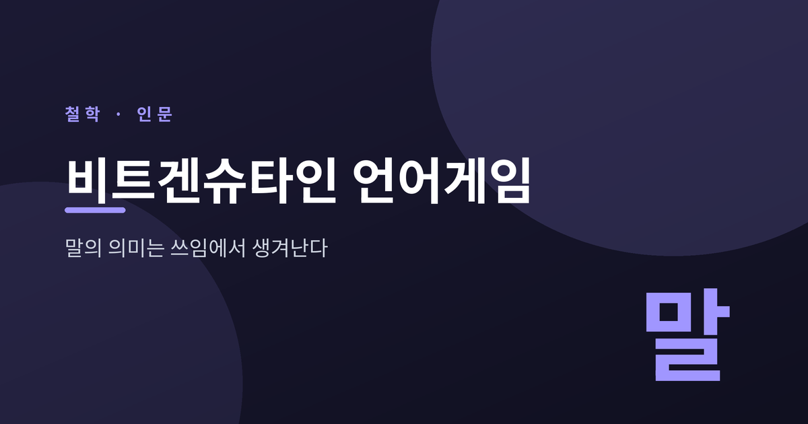
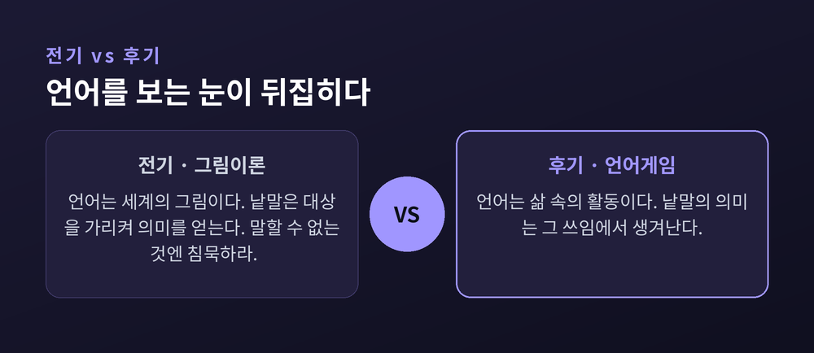
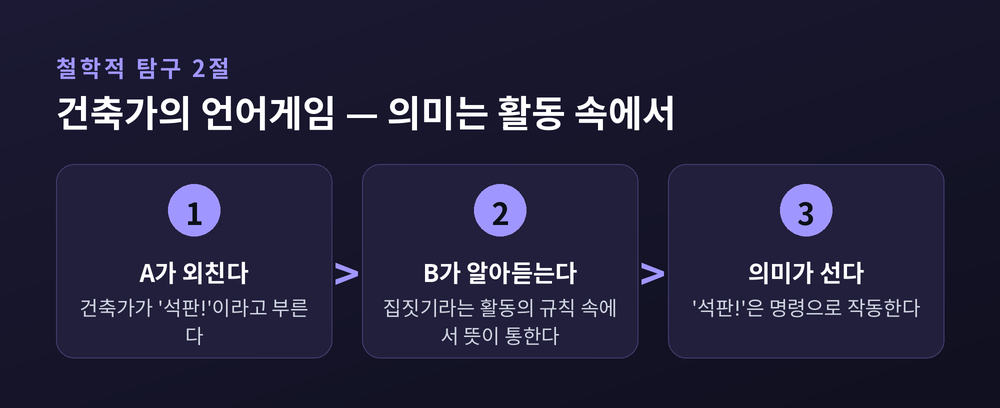
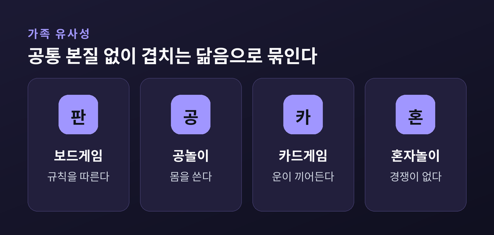
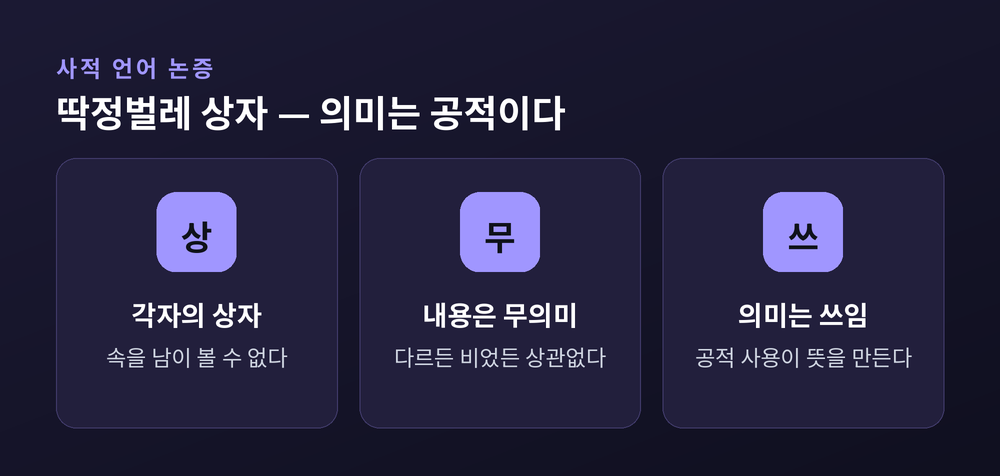
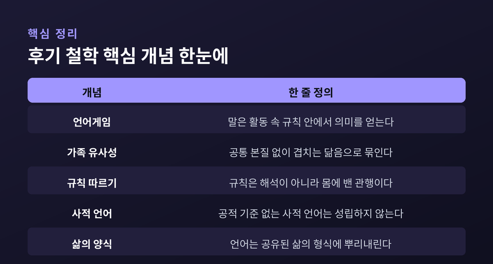

이번 글에서는 20세기 언어철학을 뒤흔든 비트겐슈타인의 '언어게임'을 정리해 보겠습니다. 낱말의 뜻이 사전이 아니라 쓰임에서 생겨난다는 발상이 무엇인지, 그가 든 구체적 예시들과 함께 따라가 봅니다. 철학을 전공하지 않아도 끝까지 읽을 수 있도록, 개념 하나하나를 장면으로 풀어 설명하겠습니다.
먼저 결론부터 말씀드립니다. 비트겐슈타인은 "낱말의 의미란 언어 안에서의 그 쓰임이다"라고 말했습니다. 의미는 말 뒤에 숨은 어떤 대상이나 관념이 아니라, 사람들이 그 말을 주고받으며 하는 활동 속에 있다는 뜻입니다.
루트비히 비트겐슈타인은 1889년에 태어나 1951년에 세상을 떠났습니다. 그의 사상은 전기와 후기로 나뉩니다.
전기를 대표하는 책은 『논리철학논고』입니다. 여기서 그는 언어를 세계의 '그림'으로 보았습니다. 명제는 세계의 사실을 그림처럼 대응해 보여주고, 낱말은 대상을 가리켜 의미를 얻는다는 생각입니다. 이 책은 "말할 수 없는 것에 대해서는 침묵해야 한다"는 유명한 문장으로 닫힙니다.
후기를 대표하는 책은 『철학적 탐구』입니다. 사후인 1953년에 출간된 이 책에서 그는 자기 전기 철학을 스스로 겨냥합니다. 예전엔 언어에 단 하나의 논리적 본질이 있다고 보았습니다. 지금은, 그러니까 후기의 그는 언어에 그런 본질은 없으며 언어란 삶 속의 활동이라고 말합니다. 한 철학자가 자신이 세운 체계를 손수 허문 드문 장면입니다.

『철학적 탐구』는 뜻밖의 인용으로 시작합니다. 아우구스티누스의 『고백록』에서 말을 배우던 장면입니다. 어른들이 어떤 사물의 이름을 부르며 그쪽으로 몸을 움직이는 것을 보고, 그 소리가 그 사물을 가리킨다는 것을 깨달아 말을 익혔다는 이야기입니다.
비트겐슈타인이 이 대목을 가져온 이유가 흥미롭습니다. 아우구스티누스가 특정한 언어관을 유난히 또렷하게 보여주기 때문입니다. 그 언어관이란 "모든 낱말은 이름이고, 이름은 대상을 가리키며, 의미란 그 낱말이 대응하는 대상"이라는 그림입니다.
비트겐슈타인은 이 그림이 아주 틀렸다고 말하지는 않습니다. 다만 언어의 극히 일부인 '대상에 이름 붙이기'를 언어 전체의 모델로 삼는 데서 철학적 혼란이 시작된다고 봅니다. 이름 붙이기는 언어라는 큰 활동의 작은 한 조각일 뿐입니다.
그는 아우구스티누스의 그림이 딱 들어맞는 원초적 언어 하나를 상상해 보라고 합니다. 『철학적 탐구』 2절에 나오는 건축가의 언어게임입니다.
건축가 A와 조수 B가 일합니다. 이 언어에는 낱말이 넷뿐입니다. "블록", "기둥", "석판", "들보". A가 "석판!"이라고 외치면 B는 그 자재를 가져옵니다.
여기서 비트겐슈타인이 짚는 것이 핵심입니다. A와 B는 낱말을 대상과 머릿속으로 '연상'하는 것이 아닙니다. 그들은 낱말을 집짓기라는 활동 속에서 사용합니다. 그리고 바로 이 활동이 낱말과 대상을 잇는다는 것의 실제 내용입니다.
"석판"은 사전으로 보면 명사입니다. 그러나 이 게임 안에서는 "석판을 가져오라"는 명령으로 작동합니다. 낱말의 의미는 사전의 뜻풀이가 아니라, 그것이 놓인 게임에서 하는 역할입니다.

언어게임이라는 말에는 이유가 있습니다. 게임에는 규칙이 있고, 참여자는 그 규칙 안에서 수를 둡니다. 말도 마찬가지입니다. 지금 어떤 게임을 하고 있느냐는 맥락 안에서만 낱말은 의미를 얻습니다.
비트겐슈타인이 꼽는 언어게임의 종류는 무수히 많습니다. 명령하고 따르기, 사물을 기술하기, 사건을 보고하기, 추측하기, 농담하기, 부탁하고 감사하고 인사하고 기도하기. 언어 활동은 이렇게 많고, 새로 생기고 사라지기도 합니다.
한 마디로 압축된 예가 "물!"입니다. 목마른 사람의 명령일 수도 있습니다. "무엇이 필요하냐"는 물음에 대한 대답일 수도 있습니다. 둑이 무너지는 순간의 경고일 수도 있습니다. 같은 소리인데 의미가 다릅니다. 어떤 언어게임 안에 놓이느냐가 의미를 정합니다.
그래서 그는 말합니다. 낱말의 의미를 알고 싶다면 숨은 뜻을 캐지 말고, 그 말이 실제로 작동하는 장면을 보라고요.
여기서 자연스러운 반문이 나옵니다. 그 많은 언어게임을 모두 '게임'이라 부른다면, 게임들의 공통 본질은 무엇이냐는 물음입니다.
비트겐슈타인의 대답은 뜻밖입니다. 그런 공통 본질은 없습니다. 보드게임, 카드게임, 공놀이, 올림픽 경기, 혼자 하는 인내심 게임을 떠올려 보십시오. 모두를 관통하는 단 하나의 특징을 찾기 어렵습니다. 어떤 것은 규칙을, 어떤 것은 경쟁을, 어떤 것은 재미를, 어떤 것은 운을 나눠 가질 뿐입니다.
그는 이것을 '가족 유사성'이라 부릅니다. 한 가족의 구성원들은 눈매나 걸음걸이, 기질에서 부분적으로 닮습니다. 그러나 모두가 공유하는 단 하나의 특징은 없습니다. 겹치고 교차하는 닮음의 그물망이 있을 뿐입니다. 개념도 그렇게 묶입니다.

이 통찰은 우리를 편하게 해 줍니다. 낱말은 필요충분조건으로 못 박히지 않아도 됩니다. 경계가 흐릿한 채로도 우리는 말을 문제없이 씁니다.
후기 철학에는 두 개의 날카로운 논증이 더 있습니다.
하나는 규칙 따르기 역설입니다. 『철학적 탐구』 201절의 정식은 이렇습니다. "어떤 규칙도 행동 방침을 결정할 수 없다. 모든 행동 방침이 그 규칙과 일치하도록 만들어질 수 있기 때문이다." "2씩 더하라"는 규칙이 있어도, 규칙이라는 문구 자체가 다음 수를 강제하지는 못합니다. 이상한 해석을 붙이면 어떤 답도 규칙에 맞는다고 우길 수 있습니다. 그의 해소는 이렇습니다. 규칙 따르기는 매번 해석하는 일이 아니라 몸에 밴 하나의 관행입니다.
다른 하나는 사적 언어 논증입니다. 오직 나만 아는 내적 감각을 가리키는, 남이 원리상 이해할 수 없는 언어가 가능할까요. 비트겐슈타인은 불가능하다고 봅니다. 옳게 썼는지 틀리게 썼는지 가려 줄 공적 기준이 없다면, '규칙을 따른다'는 말 자체가 무의미해지기 때문입니다.
이를 보여주는 그림이 '딱정벌레 상자'입니다. 모두가 상자를 하나씩 갖고 그 안의 것을 '딱정벌레'라 부릅니다. 아무도 남의 상자 속을 볼 수 없습니다. 각자의 상자 속은 서로 다를 수도, 비어 있을 수도 있습니다. 그래도 '딱정벌레'라는 말이 쓰인다면, 그 말은 상자 속 사물의 이름이 아닙니다. 상자 속에 무엇이 있든 언어의 작동에는 영향이 없기 때문입니다. '고통' 같은 감각어의 의미도 접근 불가능한 내면이 아니라, 공적 표현과 상황 속의 쓰임에서 나옵니다.

언어게임은 허공에 떠 있지 않습니다. 그것은 인간의 행동과 실천에 뿌리를 내린 활동입니다. 그래서 그는 이렇게 씁니다. "하나의 언어를 상상한다는 것은 하나의 삶의 형식을 상상하는 것이다."
삶의 양식, 곧 삶의 형식이란 언어가 작동하는 바탕입니다. 공유된 문화적 실천과 생활 방식 전체를 가리킵니다. 의미는 고립된 규칙이나 사적 심리에서 오지 않습니다. 함께 행위하고 반응하는 데서 생겨납니다.
그는 한 걸음 더 나아갑니다. 언어가 소통 수단이 되려면 정의에서의 일치뿐 아니라 판단에서의 일치도 필요하다고요. 이것은 의견의 일치가 아니라 삶의 형식에서의 일치입니다. 무엇을 같은 것으로 보고 어떻게 반응하는지가 대체로 겹쳐야, 말이 비로소 굴러갑니다.

이 사상은 완결된 정답표는 아닙니다. "의미는 쓰임이다"라는 문장도 그가 모든 낱말에 붙인 보편 공식은 아닙니다. 원문은 "많은 경우에"라는 단서를 답니다. 그래서 모든 의미를 쓰임으로 환원하는 절대 규칙으로 읽으면 지나칩니다.
규칙 따르기를 두고도 해석이 갈립니다. 크립키는 이를 회의주의적 역설로 재구성했습니다. 반면 비트겐슈타인은 회의를 주장한 것이 아니라 해소했다는 반론도 만만치 않습니다. 어느 한쪽이 정설로 굳어지지는 않았습니다.
그럼에도 그가 남긴 태도는 분명합니다. 말의 뜻을 사전에서 캐내려는 습관을 내려놓고, 그 말이 지금 무엇을 하는지 보라는 것입니다.
정리하면 이렇습니다. 비트겐슈타인은 언어를 세계의 거울에서 삶 속의 도구로 옮겨 놓았습니다.
"낱말의 의미는 그 쓰임에 있다."
그러니 어떤 말의 뜻이 궁금해진다면, 그 말이 오가는 장면을 가만히 들여다보시길 권합니다. 의미는 늘 거기, 우리가 함께 살아가는 자리에서 태어나고 있을 테니까요.